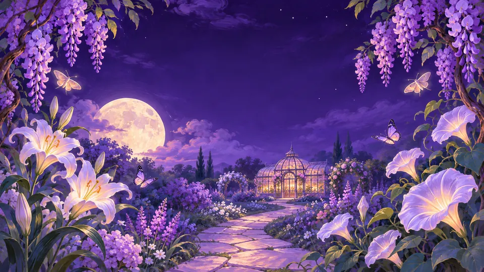
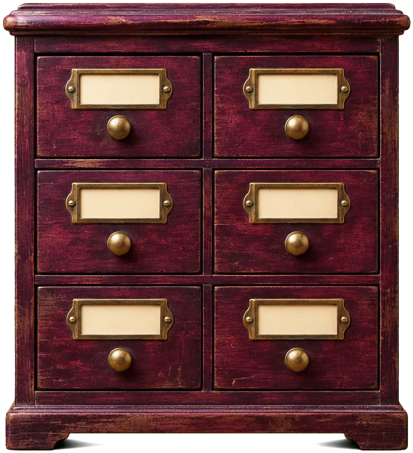
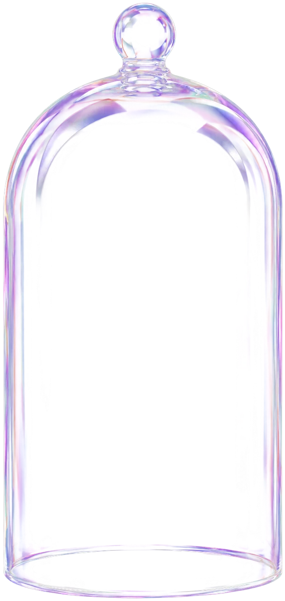
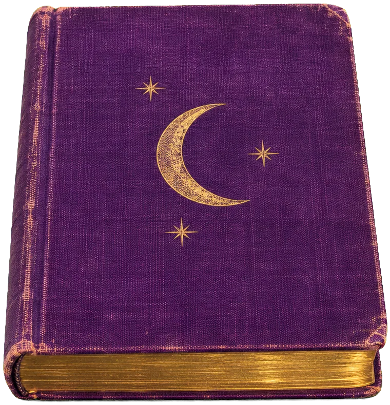
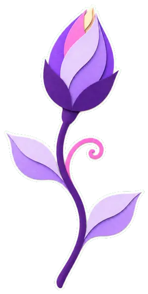

Depth
Painted scenes for the world, photographed objects as the interface.

Design system · version 1 · November 2026
The brand and interface system for Lana Huertas's portfolio. It joins three sheets Lana chose (Night bloom, Pop-up herbarium, Lunar almanac) and adds the depth of the seven portfolios Lana sent from Wall of Portfolios.
01 · Idea
The site is a pop-up almanac of a night garden. You travel through painted scenes, and the work lives in real objects you can open.

Painted scenes for the world, photographed objects as the interface.
Orchid glow on the things that matter: the name, the main button, focus.

Lavender card with a white die-cut edge. It carries the reading.

Engraving, double rules and moon phases. The almanac's order.

Only for what you press or open. If it glows like glass, it acts.
02 · Research
Seven portfolios from Wall of Portfolios, Lana's eleven Behance boards and scrolltide.co. The lessons are kept; the signature pieces are not copied.
Every strong hero is a full scene, painted or photographed, with the type inside it. Adya Srivastava, Sudarvel K, Manisha Koranga.
Sections are stops on a route that change the world around you: sky to space, field to desk. Adya Srivastava, Vibhor Mathur.
A TV frames the portrait, drawers are the process, a device holds the case studies. Sudarvel K, Ayush Dhibar, Chi Quach.
The name is made of something; everything else stays quiet: one serif, one sans, one mono. scrolltide.co, Adya Srivastava.
An interactive-mode switch and a guided tour give recruiters a fast, plain path. Ayush Dhibar, Vibhor Mathur.
Clicking the empty space grows a flower. Here it plants Lana's own paper flowers. Frances Zhao.
03 · Colour
Purple first. Contrast is measured live in your browser against the text colour each swatch carries. Orchid and rose never carry small text.
04 · Type
Touch any big letter on this page: it wears down through Redaction's rougher cuts and comes back.
Display · Redaction
40 to 200px, line 0.92
Six drawers of work
Second voice · Redaction Italic
Huertas, Manila
Signature · Pinyon Script
32px and up, never alone
pick one, or keep walking
Reading · Inter Tight
body 17px, labels 14px
A desktop app that reads typing rhythm and mouse movement to support clinician-guided screening. It flags; it does not diagnose. Body text never drops under 16px.
Labels · DM Mono 14px
Almanac no. 01 · Drawer three · 2:14
05 · Depth
Seven painted scenes, one per stop, darker in the middle of the route so the work reads. Objects are photographed, keyed and given real shadows.





06 · Buttons
Three buttons, one job each. Glass is the main action (one per screen), paper is a secondary action on paper, line is a quiet action on night.
Try them:  Hover me
Hover me
07 · Components
Every piece is live: hover, press and use the keyboard.
Six moon phases, one per stop. The current stop fills cream. On phones it moves to the bottom.
One switch stops the loader, the drifting light, depth on scroll and every animation, and is remembered. Reduced motion does the same.
A brand: arch window, die-cut edge, a stamp with the count that turns on hover. Opens a sheet of its pubmats.
Posters are taped to paper at a slight angle and straighten on hover. A pressed slide turns cream.
 CS Night 2026ACM, FEU Tech
CS Night 2026ACM, FEU TechA night plate holds the product (phone apps sit in the bell jar), a paper page holds the story. Folder tabs switch products with the arrow keys.

Workouts ease off during your period and push harder in your strongest week.
Stamps carry honours and counts; chips carry tools.
Contact sits on paper at first light: one glass action, one paper action, plain links.
Email LanaCopy the address08 · Motion
Motion comes from the materials: paper hinges, glass glows, line is still. Anything you start finishes in under 300ms, except the one opening of each stop.
| Token | Value | Use |
|---|---|---|
| Enter | cubic-bezier(0.23, 1, 0.32, 1) | Anything arriving or leaving |
| Move | cubic-bezier(0.77, 0, 0.175, 1) | Anything moving on screen |
| Hinge | cubic-bezier(0.3, 1.45, 0.5, 1) | Paper standing up, with a small overshoot |
| Fast | 140ms | Hover lift, press |
| Small | 220ms | Tabs, slides, the dialog opening (closing 150ms) |
| Stand-up | 520ms | A paper bud at each stop, a planted flower |
| Press | scale(0.98) or 4px down | Glass shrinks, paper pushes into its edge |
| Never | Fade-in on every section, tilt, filters on endless loops, colour fades on hover | |

Hinge: paper stands up once
Wear: touch the letters
09 · Rules
A recruiter reaches real work within one scroll or one click. The magic never stands between them.
Put a scrim on the side where the words sit, or put the words on paper.
Lay body text straight onto a busy painting and hope.
Make the object the button: the drawer opens the stop, the slide fills the lantern.
Add objects only as decoration, with a separate button beside them.
Clicking the sky plants a flower; the "plant a flower" button does it too.
Hide a section behind hover only.
Width min(1320px, 92vw). Equal edges. One or two screens per stop.
4 inner, 14 controls, 20 cards, round pills. Nothing else.
AA contrast, 44px targets, visible focus, skip link, arrow-key tabs, a dialog that closes on Escape.
No WebGL. Scenes are WebP, phones get a 960px cut. Every image has its size, so nothing shifts.